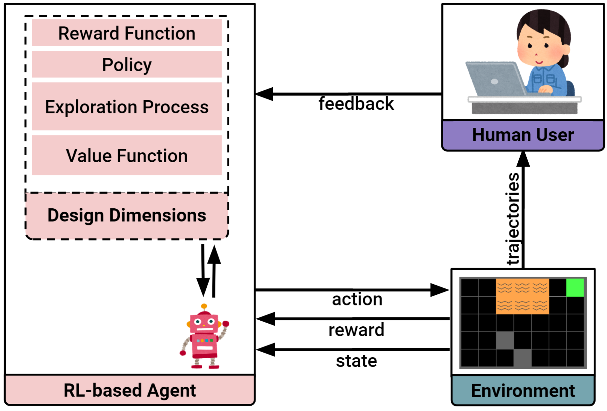

Self-introduction
自己紹介
About Me
Introduction
Introduction
My Hobbies

My Hobbies

My Hobbies

My Research
Human-centered AI
Systems that are continuously improving because of human input.

Research Goals
New interaction methods
Communication channels
Personalized models
Users' intentions
Explainable AI
Tell me why
New Interaction Methods
Interactive Reinforcement Learning
Reinforcement Learning
Interactive Reinforcement Learning
 Christian Arzate Cruz, and Takeo Igarashi. "A Survey on Interactive Reinforcement Learning: Design Principles and Open Challenges" In Proceedings of the 2020 on Designing Interactive Systems Conference (DIS), 2020.Interactive Reinforcement Learning
We propose design principles for creating interactive RL applications.
Christian Arzate Cruz, and Takeo Igarashi. "Interactive Reinforcement Learning for Autonomous Behavior Design" In Artificial Intelligence for HCI: A Modern Approach (Book Chapter), 2021.MarioMix
Finding the Right Playstyle
We propose a search method to find playstyles for Super Mario Bros. in real-time.
 Christian Arzate Cruz, and Takeo Igarashi. "MarioMix: Creating Aligned Playstyles for Bots with Interactive Reinforcement Learning" In Extended Abstracts of the Annual Symposium on Computer-Human Interaction in Play (CHI Play), 2020.
Christian Arzate Cruz, and Takeo Igarashi. "MarioMix: Creating Aligned Playstyles for Bots with Interactive Reinforcement Learning" In Extended Abstracts of the Annual Symposium on Computer-Human Interaction in Play (CHI Play), 2020.
Finding the Right Playstyle
We search for playstyles using gameplay traces by the users.
Christian Arzate Cruz, and Takeo Igarashi. "MarioMix: Creating Aligned Playstyles for Bots with Interactive Reinforcement Learning" In Extended Abstracts of the Annual Symposium on Computer-Human Interaction in Play (CHI Play), 2020.
Large Language Models as Input
Procedutal Content Generation
Felix Eckert
Agent Alignment
Yosou KatsuSummary
- We proposed a framework for HCI researchers to design new interaction methods and applications.
- New ways to search and combine bot behaviors.
- Using natural language as input method.
Personalized Models
Human-like Behaviors
Believable Characters
Creating bots that look like they’re being controlled by humans.
Christian Arzate Cruz, and Jorge Adolfo Ramirez Uresti. "HRLB⌃2: A Reinforcement Learning Based Framework for Believable Bots" Applied Sciences, 2018.
What makes AI appear human-like?
Learning human-like behaviors by observing how humans play it.
Christian Arzate Cruz, and Jorge Adolfo Ramirez Uresti. "HRLB⌃2: A Reinforcement Learning Based Framework for Believable Bots" Applied Sciences, 2018.
RL-based PCG
Co-creativity
Designing game levels with personalized AI suggestions.
Felix Eckert
Summary
- Creating human-like bots that adapt their playstyle.
- Adapting AI suggestions to fit the users' intentions.
Explainable AI
Interactive Explanations
Interactive Explanations
Natural language templates for a two-way communication method.

Christian Arzate Cruz, and Takeo Igarashi. "Interactive Explanations: Diagnosis and Repair of Reinforcement Learning Based Agent Behaviors" In IEEE Conference on Games (CoG), 2021.
Demo
Summary
- Exposing the thinking procedure of a bot.
- Creating explanations to present the current learning state of the model.
The End
Research Goals
New interaction methods
Communication channels
Personalized models
Users' intentions
Explainable
AI
Tell me why
We made use of different high-level feedback and
knowledge integration methods depending on the project.